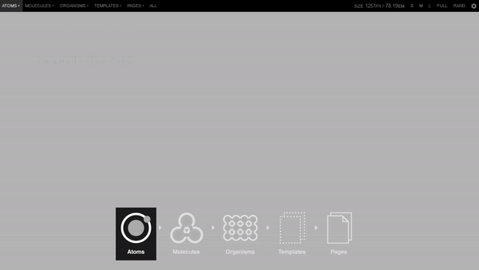

CLASE 2 - COMPONENTES
¿Qué vamos a ver hoy?
- ATOMIC DESIGN
- COMPONENTES EN VUE
- ===== PARADA =====
- LLAMADAS A API
- CREANDO DATOS DE VUE GLOBALES
1 - ATOMIC DESIGN
Es una metodología para crear sistemas de diseño, es la que utilizan los frameworks de css tipo bootstrap, tiene que ver con la manera de organizar tus componentes , estos a su vez de componen de 5 niveles.
1.1 Los 5 niveles del diseño atómico:
1 Átomos
Son elementos UI que por sí solos tienen alguna funcionalidad: botones, cards, avatares, inputs de formulario… pero también las tipografías, paleta de colores, espaciados, párrafos… Y, cada uno de ellos, tiene sus propias variaciones que representan estados: seleccionados, con foco, deshabilitados, etc.

2 Moléculas:
Una molécula es una unión de dos o más átomos. Del mismo modo, una molécula en Atomic Design es la unión de diferentes átomos para formar un elemento UI más complejo. Por ejemplo, un campo de formulario con un botón de enviar y un label. O un rectángulo con un avatar, nombre y ubicación del usuario (es decir, avatar con texto en un área determinada). O un icono junto con un texto que ocupa una área determinada.

3 Organismos
No debemos perder de vista que estamos hablando de elementos de UI formados por moléculas (que a su vez son átomos) y que, por encima de todo, pueden repetirse. En este sentido, podríamos considerar un organismo una unión de moléculas. Por ejemplo, cuando juntamos los rectángulos con el avatar y los nombres, cuando unimos los iconos y texto para crear una navegación de una aplicación, etc.

4 Plantillas
En esencia, lo que consideraríamos “plantillas” dentro del Atomic Design no dejarían de ser los wireframes: una unión de distintos organismos que forman una página o una aplicación. Se trata de un entregable de alta fidelidad, pero que no termina de ser el diseño final. Para que nos entendamos, se trata del “esqueleto” de la aplicación o página web.
5 Páginas
Este es el último nivel del Atomic Design. Son en realidad el diseño final que ya contiene las imágenes y otros detalles que hacen que ese archivo ya esté listo para el desarrollo o, en su defecto, test con usuarios o el equipo.
2 - ¿QUÉ SON LOS COMPONENTES?
Los componentes son objetos de software diseñados para cumplir un proposito concreto, basicamente en web, consiste en crearte tus propias etiquetas html, que contienen todo el diseño y funcionalidad
En la vista tienen el siguiente aspecto:
<div id="app">
<lista-ordenada></lista-ordenada>
</div>
No es necesario poner el 'el:' y el código sería el siguiente:
Vue.component('lista-ordenada', {
data () {
return {
lista: ['Alvaro', 'Dario', 'Manuel', 'Angel', 'Cristina']
}
},
template: '<ul>
<li v-for="(item, index) in lista" key="index">{{ item }}</li>
</ul>'})Esta forma de registrar componentes es global.
2.0 Componentes .vue
Vue nos brinda una forma de trabajar con los componentes mucho más legible y mejor con los archivos .vue, que se componen de los siguiente:
<template>
// Aquí tendriamos la vista
</template>
<script>
// Aquí tendriamos la instancia de vue (lógica)
export default {
data: {
...
},...
}
</script>
<style scoped>
// Aquí tendriamos el css
</style>
Y se importarían en el padre de la siguiente manera:
<template>
...
<componente-hijo></componente-hijo>
...
</template>
<script>
import componenteHijo from 'ruta/componenteHijo'
export default {
components: {
componenteHijo
}
}
</script>
Normalmente, estos archivos solo pueden usarse en un proyecto de front con NODE, que es el que los interpreta y te genera el código final para el navegador.
Pero gracias a la libreria http-vue-loader, podemos usar componentes .vue en proyectos sin node, con algunas diferencias:
// El hijo se exporta con module.exports, en lugar de export default
<script>
module.exports = {
data: {}
}
</script>
// El padre lo importa de la siguiente manera:
<script>
components: {
'componenteHijo': window.httpVueLoader('componenteHijo.vue')
},
</script>
Para los proyectos de .NET, debemos habilitar la extension .vue para poder utilizarlos:
<system.webServer>
<staticContent>
<mimeMap fileExtension=".vue" mimeType="application/javascript" />
</staticContent>
2.1 Comunicación de padre a hijo
La comunicación de padres a hijos se hace por medio de propiedades:
<div id="app">
<lista-ordenada :lista="items"></lista-ordenada>
</div>
Vue.component('lista-ordenada', {
props {
lista: Array
},...
Las propiedades son Opcionales por defecto, se pueden declarar sin definir el tipo: props['lista'], admiten algunos modificadores:
props {
cantidad: {
type: Number,
required: true,
default: 100
},
},
Es importante saber que las propiedades deberían de ser de solo lectura y que si necesitas alterar una propiedad, deberías crear una variable nueva asignandole el valor:
props: ['cantidad'],
data: function () {
return {
contador: this.cantidad
}
2.2 Comunicación de hijo a padre:
Como las propiedades deberian ser de solo lectura, hay una forma de pasar datos de los hijos a los padres, con eventos:
this.$emit('actualizar', this.variableHijo); // El hijo emite
<ChildComponent @actualizar="actualizaPadre" /> // El padre escucha el evento
El hijo emitiría un evento, actualizar y le pasaría como parametro la variable 'variableHijo'
El padre recibe ese evento y puede usar una funcion propia para realizar cualquier acción.
2.3 Slots:
Nos permiten modificar parte de la presentación y la funcionalidad de un componente hijo desde el componente padre:
//Componente hijo titulo
<div>
<slot>
<h1>{{ texto }}</h1>
</slot>
</div>
//Componente padre
<titulo texto="TITULO DE LA APLICACION">
<h3>SUBTITULO</h3>
</titulo>
En este caso se mostraría una etiqueta h3 con el texto de subtitulo, hemos podido adaptar el componente hijo a las necesidades del padre sin necesidad de modificar el codigo del hijo.
2.3.1 Named slots
Puedes tener varios slots en un componente, pero para ello debes nombrarlos.
<div>
<header> <slot name="header"></slot> </header>
<main> <slot></slot> </main>
<footer> <slot name="footer"></slot> </footer>
</div>
Desde el componente padre puedes poner el contenido asignandolo dentro de un template con la directiva v-slot="nombre" o su alias #nombre
<hijo>
<template #header>
<h1>Aquí va el header</h1>
</template>
<p>Aquí el default.</p>
<template #footer>
<p>Aquí va el footer</p>
</template>
</hijo>
Añadir que al slot sin nombre, se le asigna el nombre de default
2.3.2 Datos del slot
Los slots desde el padre pueden acceder a los datos del hijo que nosotros le pasemos de la siguiente forma:
// Padre
<titulo>
<template v-slot:default="slotProps">
{{ slotProps.persona.nombre }}
</template>
</titulo>
// Hijo
data: { return persona: {...} },
template:
`<div>
<slot :persona="persona">
<h1>{{ persona.nombre }}</h1>
<h2>{{ persona.apellido }}</h2>
</slot>
</div>`

Como resumen:
- Los padres envian datos como props a los hijos
- Los hijos comunican cambios con eventos a los padres
- Los padres pueden modificar la apariencia de parte del componente hijo con slots
¿Cuando crear un componente hijo?
- Cuando un componente se encargue de más de una tarea.
- Cuando un componente sea demasiado grande, tenga muchas variables en data, computed, etc...
2.4 Dump y Smart Components
Normalmente los componentes se separan en dos tipos:
1 - PRESENTACIÓN(DUMP): componentes que muestren datos como cards, tablas, etc...
- Se encargan de como se ven las cosas teniendo mucha parte de vista y estilo, pero poca logica.
- No definen como los datos se reciben o cambian.
- Obtienen los Datos y callbacks solo por props.
2 - CONTENIDO(SMART): componentes que actuen como grid, galerias, listas, menús laterales...
- Se encargan de funcionan las cosas, proveen datos y lógica a otros componentes.
- Contienen el estado y suelen servir como datasources, pasandole las acciones a los componentes Dump.
Normalmente las llamadas a la API las hacen los componentes principales de cada página.
PARADA
3 - Llamadas a la API:
Las llamadas a la API se producen por medio de AJAX y han ido evolucionando a lo largo del tiempo, hoy en día se suelen realizar de dos formas:
- Por la API FETCH, nativa del navegador y algo más rápida.
- Por la libreria AXIOS, es la que yo utilizo, es menos verbosa, maneja mejor los errores y tiene protección contra ataques XSRF.
Aún así os dejo 3 enlaces con las diferencias explicadas por si quereis investigar: enlace 1, enlace 2, enlace 3 , veremos un ejemplo de ambas formas.
3.1 Sobre AJAX
En ambos casos se usan promesas para manejar los datos.
Las promesas son un tipo de datos que se quedan en un estado de pendiente mientras se realiza la llamada, y ,posteriormente admiten dos funciones callback, then() y catch() para manejar una llamada correcta o un fallo respectivamente.
Todo esto a nivel de conexión, no de datos.
Ejemplo de llamada con fetch:
fetch('https://swapi.co/api/people/1/')
.then(response => response.json())
.then(json => { console.log(json) })
.catch(function (error) { console.log(error); });Ejemplo de llamada con axios:
axios.get('https://swapi.co/api/people/1/')
.then(function (response) { console.log(response); })
.catch(function (error) { console.log(error); });3.2 Sobre AJAX en Vue
En vue, las llamadas se suelen realizar en el hook created(), guardando los datos devueltos en una variable de data().
Ejemplo llamadas index
4 - REGISTRO GLOBAL
Las propiedades de la instancia de vue se pueden definir localmente, como hemos visto en la primera clase o globalmente, como hemos visto los componentes en esta:
//Localmente
new Vue({
filters: {
mayuscula (string) { return string.ToUpperCase() }
}
})
//Globalmente
Vue.filter('mayuscula', string => string.ToUpperCase())
RESUMEN
INSTANCIA DE VUE |
DIRECTIVAS |